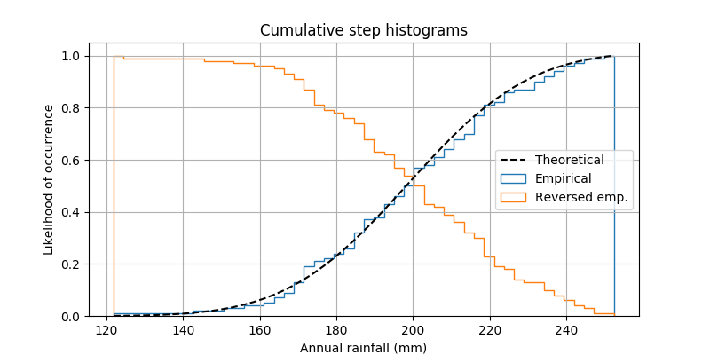

This shows how to plot a cumulative, normalized histogram as a
step function in order to visualize the empirical cumulative
distribution function (CDF) of a sample. We also use the mlab
module to show the theoretical CDF.
A couple of other options to the hist function are demonstrated.
Namely, we use the normed parameter to normalize the histogram and
a couple of different options to the cumulative parameter.
The normed parameter takes a boolean value. When True, the bin
heights are scaled such that the total area of the histogram is 1. The
cumulative kwarg is a little more nuanced. Like normed, you
can pass it True or False, but you can also pass it -1 to reverse the
distribution.
Since we’re showing a normalized and cumulative histogram, these curves
are effectively the cumulative distribution functions (CDFs) of the
samples. In engineering, empirical CDFs are sometimes called
“non-exceedance” curves. In other words, you can look at the
y-value for a given-x-value to get the probability of and observation
from the sample not exceeding that x-value. For example, the value of
225 on the x-axis corresponds to about 0.85 on the y-axis, so there’s an
85% chance that an observation in the sample does not exceed 225.
Conversely, setting, cumulative to -1 as is done in the
last series for this example, creates a “exceedance” curve.
Selecting different bin counts and sizes can significantly affect the shape of a histogram. The Astropy docs have a great section on how to select these parameters: http://docs.astropy.org/en/stable/visualization/histogram.html
import numpy as np
import matplotlib.pyplot as plt
from matplotlib import mlab
np.random.seed(19680801)
mu = 200
sigma = 25
n_bins = 50
x = np.random.normal(mu, sigma, size=100)
fig, ax = plt.subplots(figsize=(8, 4))
# plot the cumulative histogram
n, bins, patches = ax.hist(x, n_bins, normed=1, histtype='step',
cumulative=True, label='Empirical')
# Add a line showing the expected distribution.
y = mlab.normpdf(bins, mu, sigma).cumsum()
y /= y[-1]
ax.plot(bins, y, 'k--', linewidth=1.5, label='Theoretical')
# Overlay a reversed cumulative histogram.
ax.hist(x, bins=bins, normed=1, histtype='step', cumulative=-1,
label='Reversed emp.')
# tidy up the figure
ax.grid(True)
ax.legend(loc='right')
ax.set_title('Cumulative step histograms')
ax.set_xlabel('Annual rainfall (mm)')
ax.set_ylabel('Likelihood of occurrence')
plt.show()
Total running time of the script: ( 0 minutes 0.020 seconds)